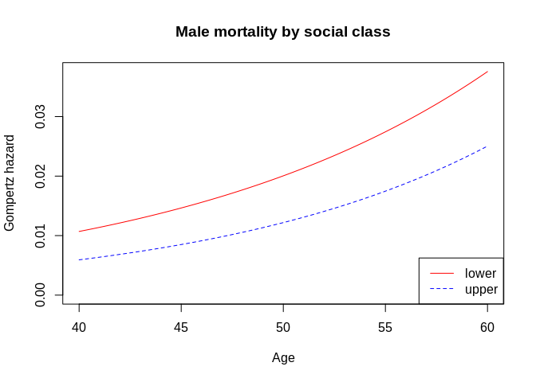

eha is a package for event history and survival analysis, with some enhancements of the survival package and many unique features, like sampling of risk sets and the weird bootstrap in Cox regression, parametric proportional hazards and accelerated failure time models allowing for right censoring and left truncation. You can read more about that and other features in the vignette("eha").
The stable version of eha is found on CRAN and installed in the usual way.
You can install the development version of eha from github with:
# install.packages("devtools") devtools::install_github("goranbrostrom/eha")
If you are on Windows, you need to have Rtools installed as well, needed for compiling C and Fortran code. On Windows, it is a good idea (but not necessary) to install MikTeX so you can get documentation in PDF format.
This is a basic example which shows you how to solve a common problem: In focus is male mortality in the ages 40–60 and the dependence on social class (SES). Data come from the Skellefteå region in northern Sweden and consists of males born in the time period 1800–1820. It is assumed that mortality follow a Gompertz distribution in both SES classes. The result is adjusted for birth date centered around January 1, 1810.
library(eha) #> Loading required package: survival fit <- phreg(Surv(enter + 40, exit + 40, event) ~ I(birthdate - 1810) + strata(ses), data = mort, dist = "gompertz") plot(fit, fn = "haz", col = c("red", "blue"), main = "Male mortality by social class", ylab = "Gompertz hazard", xlab = "Age")

A proportional hazards model seems to be appropriate, and a formal test of proportionality is easy to perform.